Agregar y quitar objetos en Photoshop es un proceso
fundamental en la edición de imágenes digitales que consiste
en incorporar nuevos elementos o eliminar partes de una imagen
de manera precisa y realista. Esta técnica es ampliamente
utilizada en diseño gráfico, fotografía, publicidad y diseño
web para mejorar la composición visual, corregir
imperfecciones o crear efectos artísticos. Para lograr
resultados profesionales, se emplean herramientas como la
selección, el clonado, el relleno según contenido y las
máscaras de capa, entre otras.
Agregar Objetos Mediante Clonación
La herramienta de
tapón de clonación en Photoshop
es una herramienta muy útil para retocar imágenes, permitiendo
al usuario duplicar partes de una imagen y aplicar esas áreas
en otra parte de la misma imagen o en otra imagen
completamente diferente. Se utiliza comúnmente para eliminar
imperfecciones, como manchas, arrugas o elementos no deseados
en la foto, replicando píxeles de una zona "limpia" para
cubrir la imperfección.
¿Cómo funciona?
Crear una Capa Nueva: En esta
nueva capa se colocará el clon del objeto fuente.
Cambiar a Capa Anterior: Se
debe volver a la capa en donde está la imagen a Clonar.
Seleccionar la Herramienta: La
herramienta de tapón de clonación se encuentra en la barra
de herramientas, generalmente en el mismo grupo que la
herramienta Pincel (el ícono suele parecer un sello de
goma).
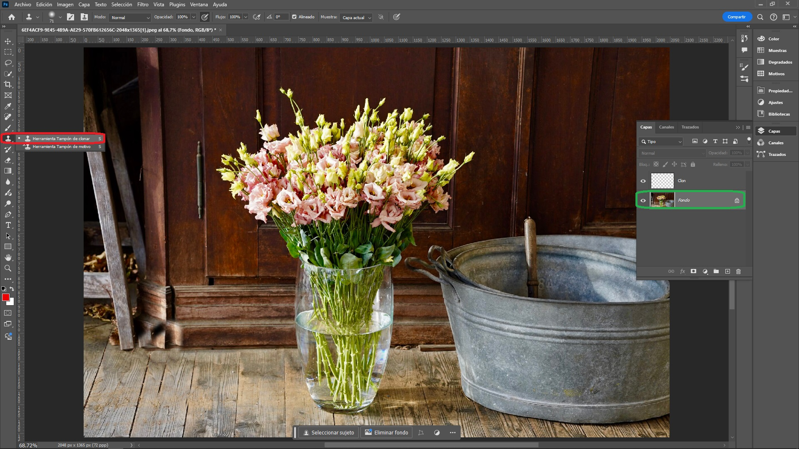
Agregar Objetos Mediante Clonación en Photoshop
Configurar la Herramienta:
Tamaño y Dureza del Pincel:
El usuario puede ajustar el
tamaño y la
dureza del pincel
para adaptarlo a la tarea específica. Un borde suave
(menor dureza) se utiliza cuando se quiere un resultado
más difuminado, mientras que un borde duro (mayor
dureza) es mejor para detalles precisos.
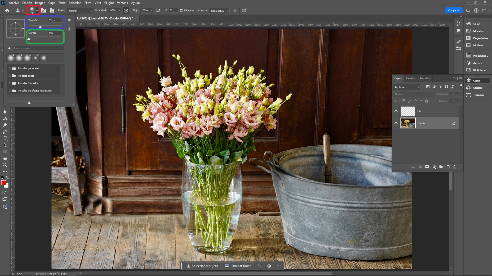
Clonación en Photoshop - Tamaño y Dureza del
Pincel
Opacidad y Flujo: También
se puede ajustar la opacidad y el flujo para determinar
cuán fuerte será el efecto del clonado.
Clonación en Photoshop - Opacidad y Flujo
Definir la Fuente de Clonación:
Para definir la fuente desde donde se va a clonar, el
usuario debe mantener presionada la tecla Alt y
hacer clic en cualquier parte de la zona que quiere clonar.
Esto define el punto de origen, ver círculo rojo en la parte
inferior del florero.
Clonación en Photoshop - Definir la Fuente de
Clonación
Aplicar el Clon: Primero
cambiar de capa, la que se creo para contener el clon que se
creará, luego el usuario puede empezar a pintar en la zona
donde quiere aplicar el clon, y la herramienta replicará los
píxeles de la zona de origen en la nueva área.
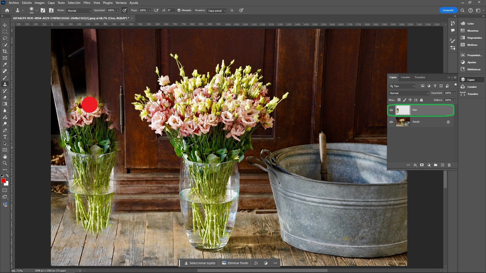
Clonación en Photoshop - Aplicar el Clon
Proceso: En la siguiente
animación se puede ver como es el proceso de clonación de un
objeto.
Animación de una Clonación en Photoshop
Tamaño y Dureza del Pincel
Tamaño del Pincel:
El tamaño del pincel se refiere al diámetro del área que
será afectada por cada trazo. El tamaño determinará la
amplitud de la marca que deja sobre el lienzo digital.
Un pincel más grande cubrirá un área mayor con cada
trazo, mientras que uno más pequeño permitirá un trabajo
más detallado y preciso.
Cómo influye:
Pinceles Grandes: Cubren
áreas más extensas rápidamente. Son ideales para
eliminar objetos grandes o rellenar zonas amplias.
Pinceles Pequeños:
Permiten un trabajo más preciso y detallado. Son
perfectos para quitar manchas pequeñas, retocar
texturas o clonar detalles finos.
Dureza del Pincel:
Indica la transición entre el borde del pincel y el área
que no se ha pintado.
Cómo influye:
Pinceles Duros: Tienen
bordes definidos y crean marcas nítidas. Son útiles
para clonar texturas o bordes bien definidos.
Pinceles Suaves: Tienen
bordes difuminados y crean transiciones más suaves.
Son ideales para mezclar colores, suavizar bordes
duros o crear efectos más naturales.
Opacidad y Flujo del Pincel
Opacidad del Pincel:
Determina la transparencia de la muestra que se está
clonando al aplicarla sobre la imagen.
Cómo funciona:
Opacidad Baja: La muestra
se mezcla con los píxeles existentes, creando un
efecto más suave y menos invasivo. Es ideal para
retoques sutiles o cuando se quiere combinar elementos
de forma gradual.
Opacidad Alta: La muestra
reemplaza casi por completo los píxeles sobre los que
se pinta, creando un efecto más definido y visible.
Útil para eliminar objetos grandes o realizar cambios
drásticos.
Flujo:
Controla la cantidad de pintura que se aplica con cada
trazo del pincel.
Cómo influye:
Flujo Bajo: Se deposita
menos pintura en cada pasada, permitiendo construir la
clonación gradualmente. Ideal para detalles finos o
cuando se quiere evitar un efecto demasiado abrupto.
Flujo Alto: Se deposita
más pintura en cada pasada, lo que permite cubrir
áreas más grandes rápidamente. Útil para eliminar
objetos grandes o realizar cambios más evidentes.
Consejos para un Mejor Resultado
Cambiar frecuentemente la fuente: Si se trabaja en una gran área, es útil cambiar la fuente
de clonación para evitar que se repitan patrones y que el
resultado sea más natural.
Utilizar capas: Trabajar en una
capa nueva permite al usuario corregir errores sin dañar la
imagen original.
Zoom y atención al detalle:
Trabajar con un zoom más cercano permite un mayor control
sobre los detalles que se están clonando.
Eliminar Objetos Pequeños
La
Herramienta Pincel Corrector Puntual
en Photoshop es una de las herramientas más útiles para
eliminar imperfecciones, manchas y objetos pequeños de una
imagen de manera rápida y sencilla. Su funcionamiento se basa
en reemplazar automáticamente el área seleccionada con píxeles
que se mezclan con el entorno, lo que facilita la corrección
sin la necesidad de tomar muestras manualmente.
Cómo Usar la Herramienta Pincel Corrector Puntual
Seleccionar la Herramienta:
Ir a la barra de herramientas en el lado izquierdo de la
pantalla.
Seleccionar la Herramienta Pincel Corrector Puntual. La
forma rápida de seleccionarla es presionando la tecla
j en el teclado.
Si no ve la herramienta, puede estar agrupada con otras
herramientas como el Pincel Corrector o el Pincel de
Parche. Mantener presionado el botón de la herramienta
visible hasta que aparezca el menú desplegable, y
seleccionar la Herramienta Pincel Corrector Puntual.
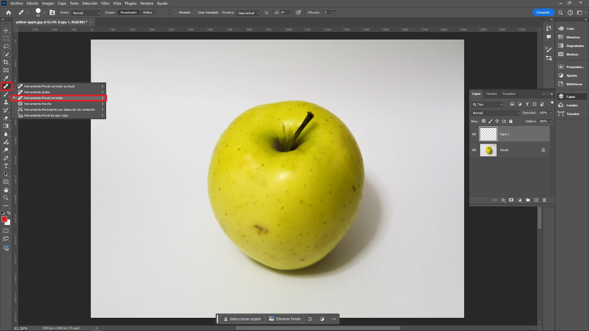
Eliminar Objetos Pequeños - Seleccionar Pincel en
Photoshop
Ajustar el Tamaño del Pincel:
En la parte superior de la pantalla, se encontrará las
opciones de la herramienta. Ajustar el tamaño del pincel
utilizando el control deslizante o escribiendo un valor
numérico.
Se puede ajustar el tamaño rápidamente usando las teclas
de corchete izquierdo [ y derecho
] en el teclado.
Definir Muestra: Mantener
presionada la tecla Alt y hacer clic en un área
cercana que a la que se quiera usar como muestra para cubrir
el objeto pequeño.
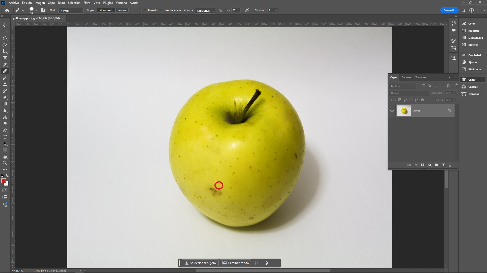
Eliminar Objetos Pequeños - Definir Muestra en
Photoshop
Aplicar sobre el Área a Corregir:
Simplemente hacer clic sobre la imperfección u objeto
que se desea eliminar. Photoshop se encargará de
analizar la zona y corregirla instantáneamente.
Si se necesita cubrir un área más grande, hacer clic y
arrastrar el pincel sobre la zona deseada.
Eliminar Objetos Pequeños - Aplicar sobre el Área
a Corregir en Photoshop
Ajustar Detalles si es Necesario: Si el resultado no es perfecto, se puede deshacer el
cambio con Ctrl + z y volver a
intentarlo con un tamaño de pincel diferente o cambiando el
modo de fusión.
Consejos Adicionales
Trabajar en una Capa Duplicada:
Para evitar modificaciones destructivas, trabajar siempre en
una capa duplicada de la imagen original.
Zonas Detalladas: Cuando
trabajes en áreas con mucho detalle o patrones repetitivos,
es posible que se necesite usar una combinación de la
Herramienta Pincel Corrector Puntual con otras herramientas
como la Herramienta Clonar o las Máscaras de Capa para
obtener un resultado más preciso.
Quitar Objetos
El Relleno según contenido en
Photoshop es una poderosa herramienta que permite rellenar una
selección en una imagen de manera inteligente, utilizando el
contenido circundante para que el relleno se integre de manera
natural en la imagen. Es especialmente útil para eliminar
elementos no deseados o rellenar áreas vacías sin dejar rastro
visible.
Cómo Usar la Herramienta Relleno Según Contenido
Selecciona el Área a Rellenar:
Usa una herramienta de selección como el lazo, la varita
mágica o la herramienta de selección rápida para seleccionar
el área que deseas rellenar, en este caso se usará
el lazo.
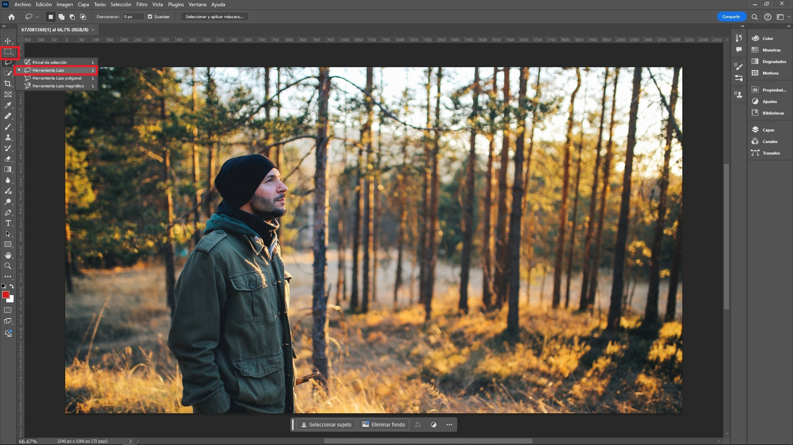
Quitar Objetos - Herramienta Lazo en Photoshop
Figura completamente envuelta por la herramienta lazo para
borrarla.
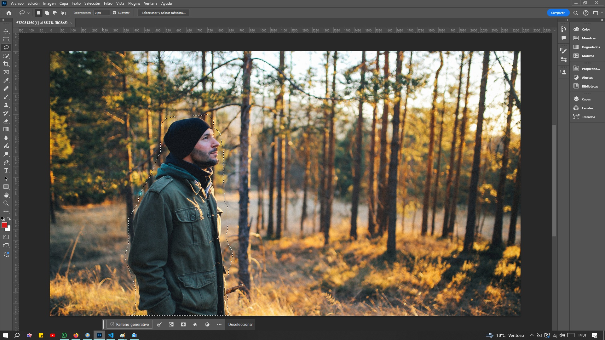
Quitar Objetos - Figura Envuelta totalmente en
Photoshop
Acceder a la Opción de Relleno Según Contenido: Con la selección activa, ir a la barra de menú y
seleccionar
Edición > Relleno según contenido >.
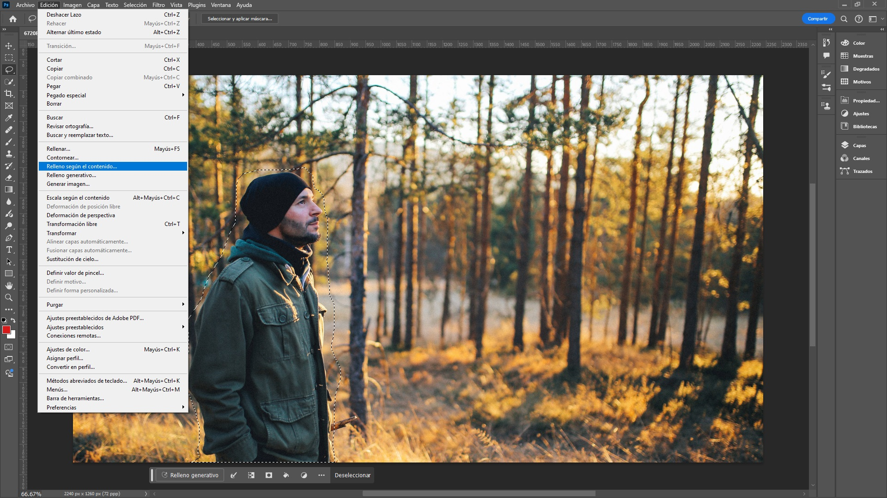
Quitar Objetos - Opción Relleno Según Contenido en
Photoshop
Personalizar la Configuración:
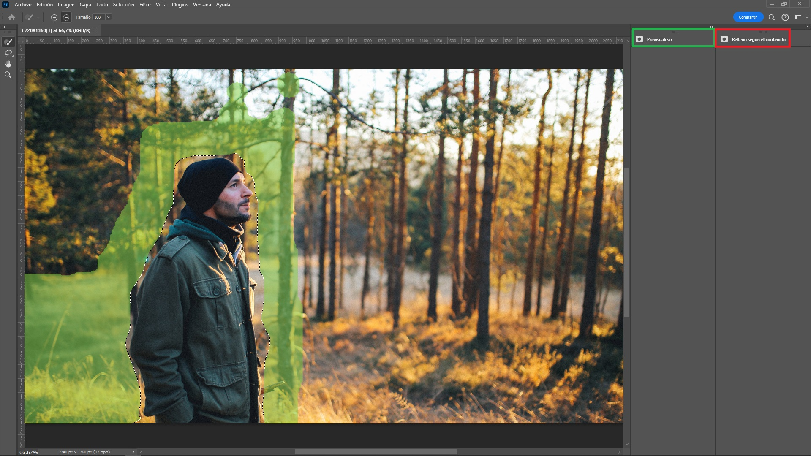
Quitar Objetos - Personalizar la Configuración en
Photoshop
Ventana de Previsualización: Ventana en la cual se verá el resultado de la
eliminación del objeto.
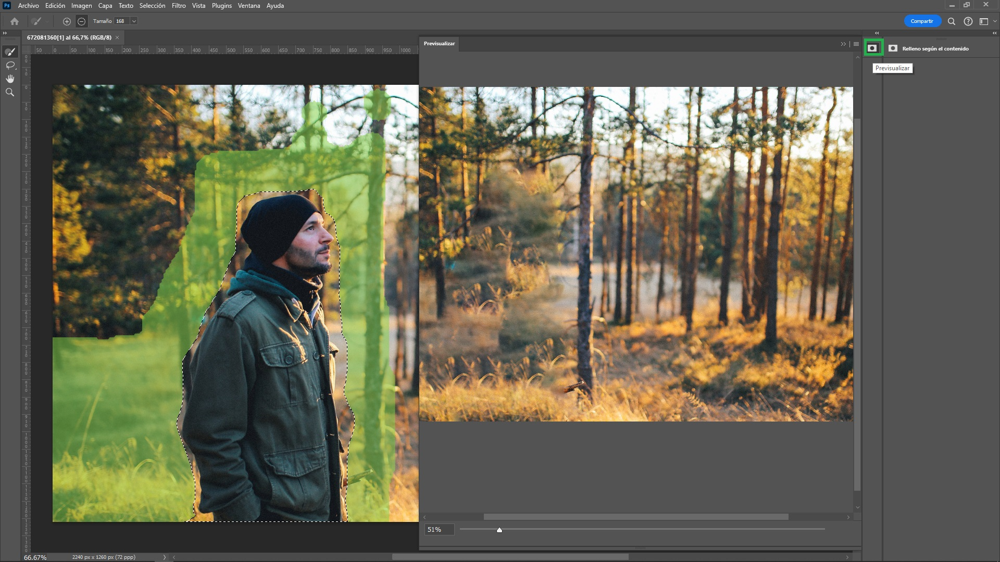
Quitar Objetos - Ventana de Previsualización en
Photoshop
Opciones de Configuración:
Modo de Relleno: Se puede
seleccionar el modo de fusión del relleno.
Color de Adaptación:
Ajusta cómo se adapta el color del relleno al área
circundante.
Escala y Rotación: Se
puede permitir que Photoshop escale o rote el
contenido para que encaje mejor.
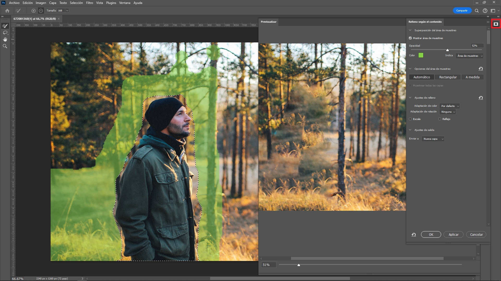
Quitar Objetos - Opciones de Configuración en
Photoshop
Visualizar y Ajustar la Muestra de Contenido:
En la ventana, se verá una máscara verde que muestra las
áreas que Photoshop utilizará para crear el relleno. Se
Puede ajustar esta máscara para incluir o excluir
ciertas áreas.
Usar la
Herramienta de Pincel
para agregar o eliminar partes de la muestra de
contenido, en este caso se uso para eliminar parte del
área que se usa para generar el relleno.
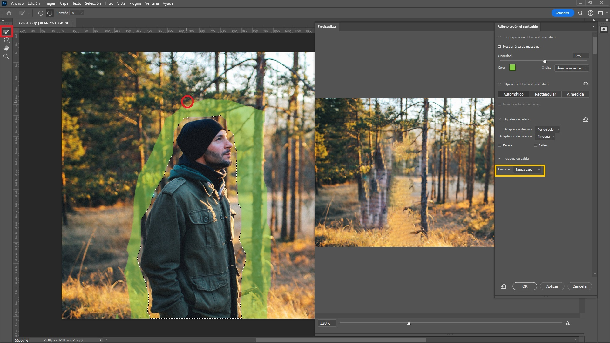
Quitar Objetos - Visualizar y Ajustar la Muestra de
Contenido en Photoshop
Aplicar el relleno: Una vez que
se esté satisfecho con la vista previa, hacer clic en OK
para aplicar el relleno. Photoshop procesará la imagen y
rellenará la selección. Se puede guardar en la misma capa o
en una nueva.
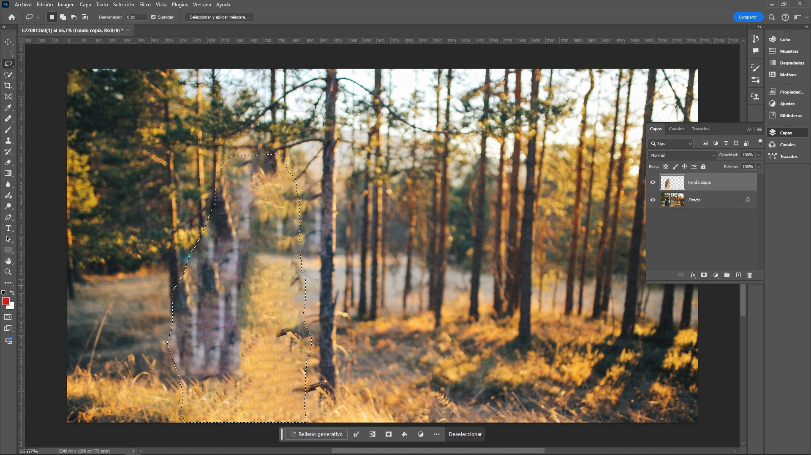
Quitar Objetos - Aplicar el Relleno en Photoshop
Herramienta Parche (Patch Tool)
El Parche (Patch Tool) en Photoshop es una herramienta muy
útil para retocar y restaurar imágenes. Se utiliza
principalmente para eliminar imperfecciones, manchas, objetos
no deseados o para clonar áreas de una imagen.
Cómo Funciona el Parche en Photoshop
Selección de la Herramienta:
Ir a la barra de herramientas en el lado izquierdo de la
pantalla.
Seleccionar la Herramienta Pincel Corrector Puntual. La
forma rápida de seleccionarla es presionando la tecla
j en el teclado.
Si no ve la herramienta, puede estar agrupada con otras
herramientas como el Pincel Corrector o herramienta
quitar. Mantener presionado el botón de la herramienta
visible hasta que aparezca el menú desplegable, y
seleccionar la Herramienta Herramienta Parche.
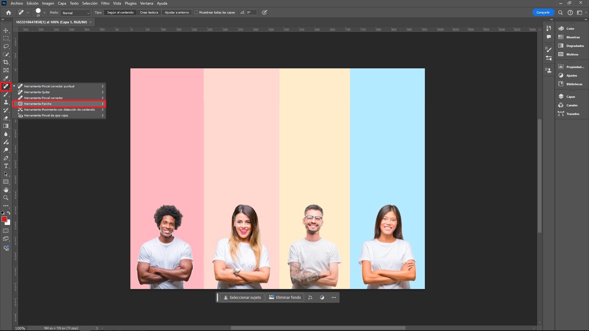
Herramienta Parche - Selección en Photoshop
Selección del Área: Con la
herramienta Parche seleccionada, se dibuja una selección
alrededor del área que se desea corregir o clonar. Puedes
hacer esta selección a mano alzada, similar a la herramienta
Lazo.
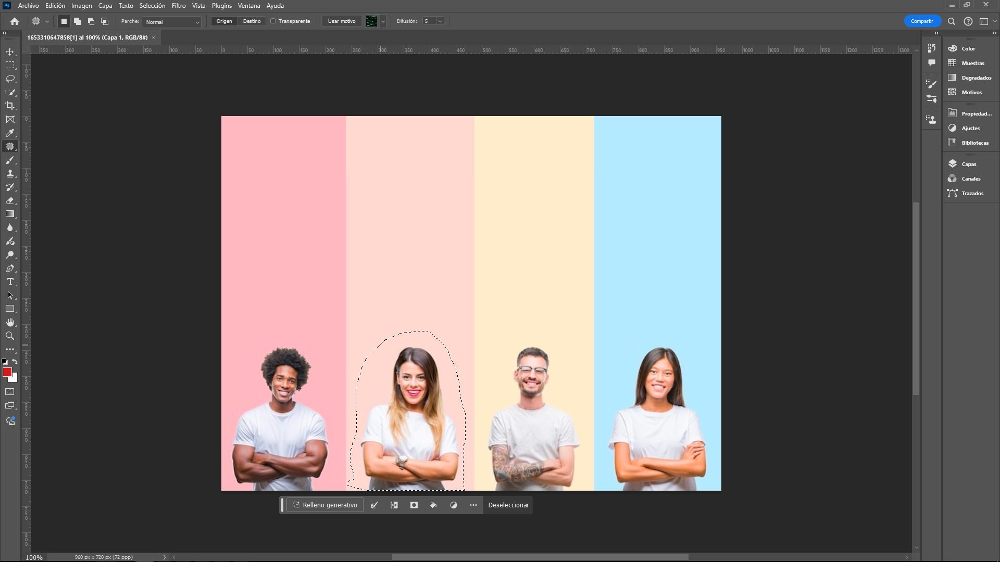
Herramienta Parche - Selección del Área Photoshop
Borrar: Arrastrar la selección
hacia el área que quieres usar como reemplazo. Photoshop
analizará la textura y el contenido y hará una sustitución
coherente, en este caso se movió hacia arriba.
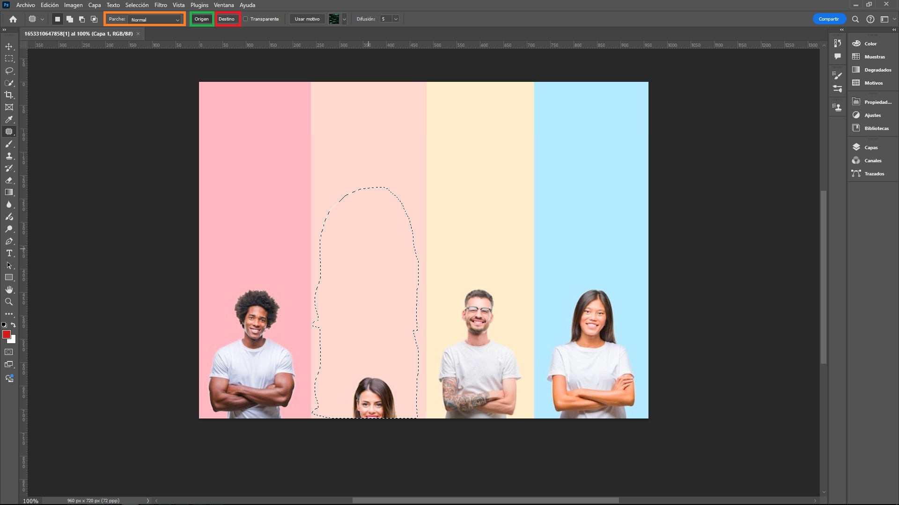
Herramienta Parche - Borrar en Photoshop
Modo de Trabajo:
Normal: La
herramienta copiará el contenido del área seleccionada y
lo reemplazará con el contenido del área de destino,
fusionándolo para que coincida con la textura,
iluminación y sombreado.
Destino:
Permite seleccionar el área que se desea copiar y luego
arrastrarla a la ubicación deseada.
Origen:
Seleccionas el área a corregir y luego arrastras la
selección a otra parte de la imagen que deseas utilizar
para la corrección.
Ajustes adicionales:
Difusión (Feather): Permite suavizar los bordes de la selección para que
la fusión entre la corrección y la imagen original sea
más sutil.
Transparencia:
Permite controlar la opacidad de la corrección aplicada.
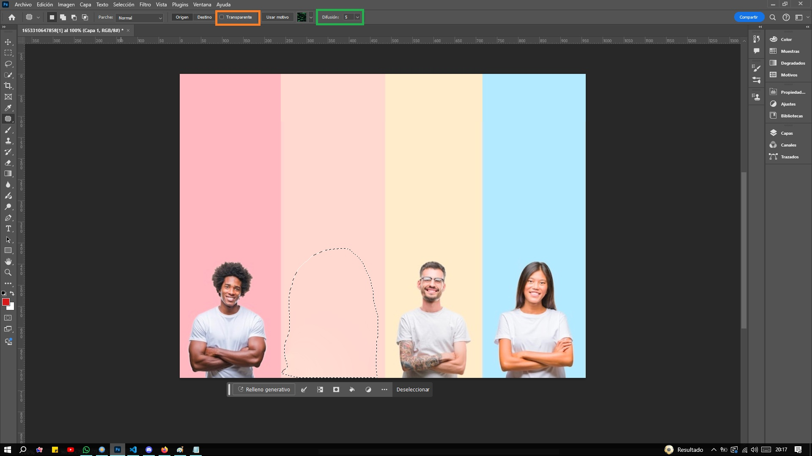
Herramienta Parche - Ajustes Adicionales en
Photoshop
Usos Comunes:
Eliminar Manchas en la Piel: El Parche es ideal para retocar retratos, eliminando
imperfecciones como granos, cicatrices o manchas.
Restauración de Fotos Antiguas: Se utiliza para eliminar rasgaduras, manchas o
restaurar partes faltantes de una imagen.
Eliminar Objetos no Deseados: Perfecto para eliminar objetos o personas de una
imagen, rellenando el área con el contenido circundante.
COMENTARIOS
Si tiene alguna inquietud, duda o ha encontrado algún error, por
favor infórmelo a través del formulario disponible para este
propósito.